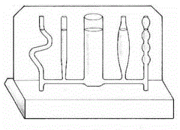
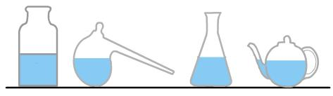
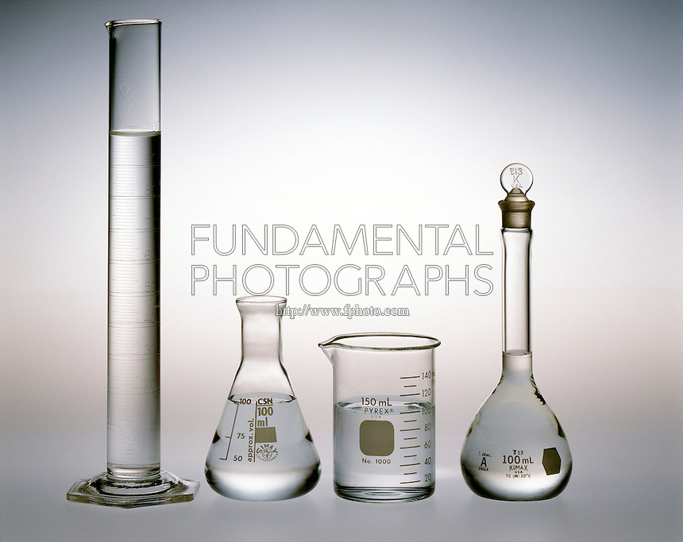

The Pascal's Apparatus
Pascal's vases, balanced water columns, communicating vessel for Liquid Level Pressure is independent of size and shape of the container

- Pascal's vases connects 6 tubes of various shapes to a common water reservoir. Water levels in containers with different shapes but attached to a common reservoir reach the same height regardless of the shape of the container.
- Communicating vessel for liquid level shows the equilibrium of the same liquid in vessels of different cross section. The apparatus contains five connecting vessels with different shapes.
- Use a large beaker of water and a small beaker of water. Hold the mouth of the filter funnel at the same depth in each beaker. The corresponding differences in height of the coloured water in the U-tube are the same
- Fit plastic bottles of different shapes. Pour water into the bottles. Observe the level of the water at balancing in the bottles. The height of the water in each bottle is the same. Liquid pressure is independent of the size or shape of the container. 
- Cut the bottoms from different shaped plastic bottles. Fit one bottle with a one hole stopper and the other with a two holes stopper. Connect the first bottle with a two hole stopper to a tap or reservoir and the second bottle. Connect all the bottles with glass tubing and rubber connectors. The last bottle has the one hole stopper. Invert the attached bottles. Turn on the tap so that water flows into the bottles. The level of water is the same in the differently shaped bottles. Pressure in a liquid is independent of the size or shape of the vessel and depends only on the depth. Some people say "Water finds its own level."
- A manometer consists of plastic tubing attached to one arm of a U-tube. Prepare different size containers containing same liquid, e.g. water. Stretch a piece of thin rubber over the mouth of a filter funnel and tie it in place. Attach the open end of the plastic tubing to the stem of the funnel. Hold the mouth of the funnel at the same depth in different size containers containing the same liquids. Observe the height of the water in the two arms of the U-tube. At the same depths the pressures are the same. Liquid pressure does not depend on the size of the container.
- Use a wide mouth beaker filled water. Use three glass tubes open at both ends and bottom ends with various shapes including, one tube is straight, one tube is bent 90o, and one tube is bent 180o. Insert the tubes into water such that the mouths are the same depth below the surface. Fill the tubes with coloured kerosene, or with another coloured fluid less dense than water until all of the water is just pushed out of the tubes leaving only coloured fluid in the tubes. Kerosene does not run out of the ends and the height of kerosene in each tube is the same.
- Pascals apparatus shows that the pressure of a liquid varies with the depth and does not depend on the shape of the container. It is a stand holding two glass vessels. Slowly fill the first vessel with dyed water and note how the pointer shows the position at which the pressure of the water overcomes the flanged seal. Repeat the experiment with a second vessel to show that the thrust on the base depends on the area of the base and the depth of the liquid, but not on the shape of the container
